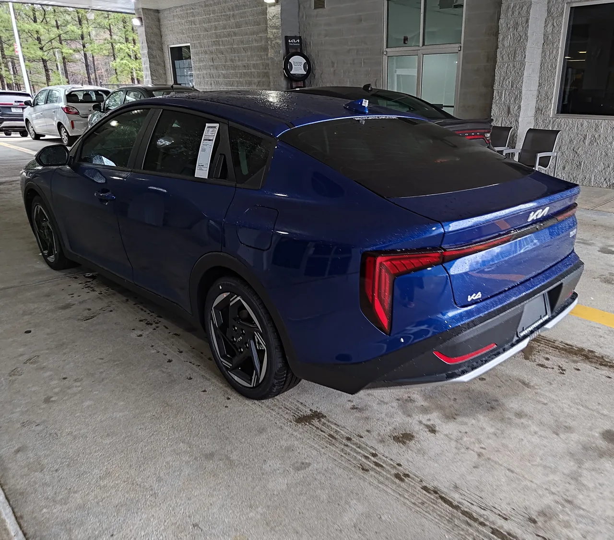

▲ 기아 K4 GT-Line(미국 사양). 국내에는 자매차종인 K3로 판매된다 ⓒ Autosdeprimera, Wikimedia Commons (CC BY 3.0)
미국 자동차 매체 카버즈(CarBuzz)가 준중형 세단 시장의 두 강자, 기아 K4와 토요타 코롤라를 정면으로 비교했다. 코롤라는 지난해 미국에서 24만 8,088대가 팔리며 K4(14만 514대)를 판매량에서 크게 앞섰지만, 가격·공간·보증 등 실구매 관점의 여러 항목에서는 K4가 우위에 있다는 것이 매체의 평가다.
| 항목 | 기아 K4 | 토요타 코롤라 |
|---|---|---|
| 가격 | 전 트림에서 더 저렴 | - |
| 연간 유지비 | 코롤라 대비 약 505달러 절감 | - |
| 기본 보증 | 60개월/6만 마일 | 36개월/3.6만 마일(업계 표준) |
| 파워트레인 보증 | 120개월/10만 마일 | 60개월/6만 마일(업계 표준) |
| 최고출력 | - | 169마력 |
| 2025년 미국 판매 | 14만 514대 | 24만 8,088대 |
1. 공간·화면·보증은 K4 우위, 출력과 판매량은 코롤라

▲ 토요타 코롤라 LE. 169마력 출력과 오랜 신뢰도를 바탕으로 여전히 압도적인 판매량을 기록한다 ⓒ AnalyserOP, Wikimedia Commons (CC BY 4.0)
카버즈는 K4가 앞뒤 어깨공간·다리공간·헤드룸에서 코롤라보다 넉넉하고, 12.3인치 대형 인포테인먼트 화면을 기본으로 갖춘 점을 우위 요소로 꼽았다. 보증 조건 차이도 크다. K4는 기본 보증 60개월·6만 마일, 파워트레인 보증 120개월·10만 마일을 제공해 코롤라보다 훨씬 긴 보증 기간을 확보했다. 반면 코롤라는 169마력 엔진으로 출력에서 앞서지만, 실제 0→60마일 가속 시간은 두 차 모두 약 9초로 체감 차이는 크지 않다는 것이 매체의 설명이다. 다만 코롤라는 오랜 신뢰도와 브랜드 인지도를 바탕으로 판매량에서는 K4를 여전히 크게 앞서고 있다.

▲ 기아 K4 EX 세단. 넉넉한 실내공간과 대형 인포테인먼트 화면이 우위 요소로 꼽힌다 ⓒ SGHFan, Wikimedia Commons (CC0)
2. 국내는 사실 K3도 없다 — 아반떼 독주 체제

▲ 토요타 코롤라 후면. 국내에서는 K4의 자매차종 K3가 단종돼, 준중형 세단 신차 시장 자체가 아반떼 독주 체제다 ⓒ LuvsMG481, Wikimedia Commons (CC BY-SA 4.0)
기아 K4는 미국 시장 전용 명칭으로, 원래대로라면 국내의 같은 체급 K3가 대응 모델이다. 하지만 K3는 2024년 7월 국내 생산이 종료되며 12년 만에 단종됐다. SUV·하이브리드 선호가 뚜렷해진 시장 흐름 속에서 K3의 월평균 판매량이 1,000대 미만까지 떨어졌고, 기아가 수요가 높은 하이브리드 SUV·픽업트럭 생산에 자원을 집중하기로 하면서 내려진 결정이었다. 결과적으로 국내 준중형 세단 시장은 현대 아반떼가 70% 이상의 점유율로 사실상 독주하는 구조가 됐다.
즉 미국에서는 K4와 코롤라가 접전을 벌이고 있지만, 국내에서는 같은 체급의 기아 모델 자체가 존재하지 않는 셈이다. K3를 원하는 국내 소비자는 이제 중고차 시장에서만 매물을 찾을 수 있으며, 단종 이후 오히려 중고 시세가 재조명받는 역설적인 상황도 벌어지고 있다.
3. 정리 — 실속이냐 브랜드 신뢰도냐
숫자로만 보면 K4가 코롤라를 여러 항목에서 앞서지만, 코롤라가 여전히 압도적으로 많이 팔리는 이유는 단순 스펙 비교로 설명되지 않는 브랜드 신뢰도와 중고 잔존가치, 정비 인프라의 힘이 크다는 분석이 지배적이다. 초기 구매 비용과 보증 기간을 우선한다면 K4가, 오랜 검증과 높은 중고차 시세를 우선한다면 코롤라가 여전히 안전한 선택으로 꼽힌다.
국내 준중형 세단 구매를 고려 중이라면 사실상 아반떼가 유일한 신차 선택지라는 점도 염두에 둬야 한다. 기아 라인업에서 준중형 세단의 감성을 원한다면, K3의 SUV 파생 모델이나 셀토스 같은 소형 SUV로 눈을 돌리는 것도 대안이 될 수 있다.